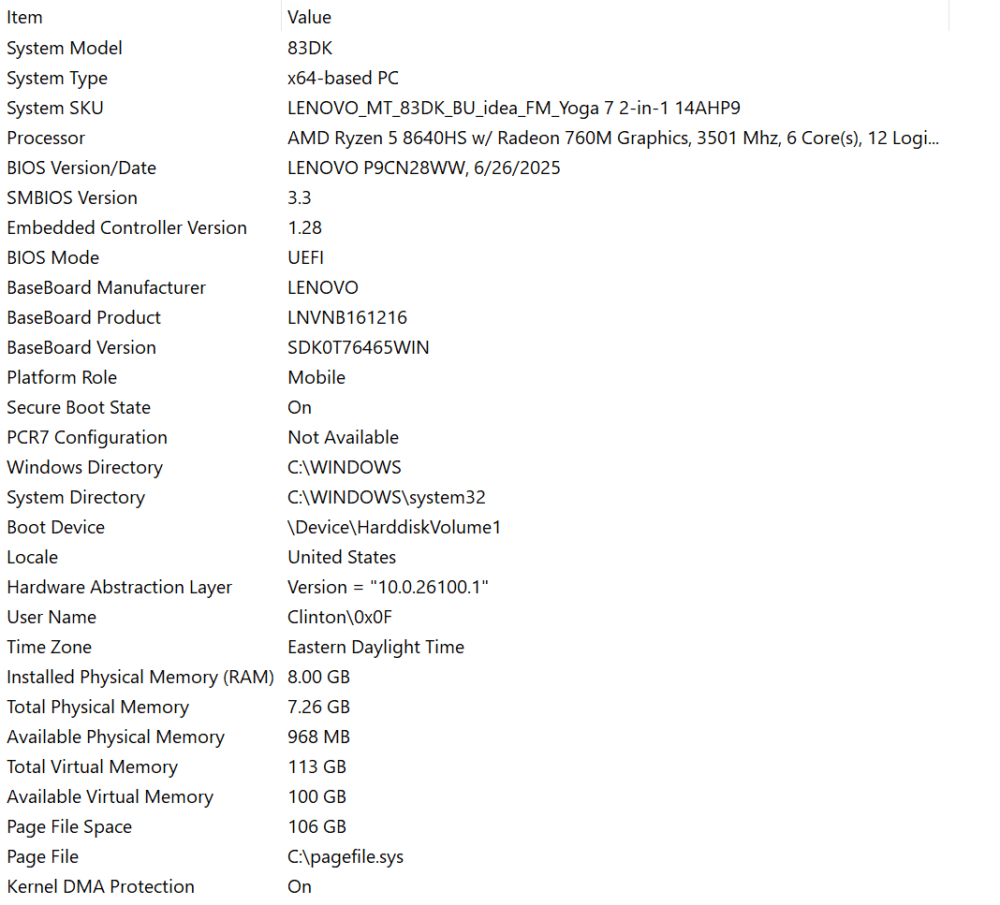

Not much of a documentation of the project, as that would be quite redundant (Opcodes, explanation, etc. are all defined in the 'prompt/' folder). It's more based on the journey of creating it and specific architecture issues i've faced while creating this project.
2026-04-29T19:46:02Z: I was just wasting time by completing some Leetcode questions for fun when I thought of this pretty neat idea: A programming language for LLM's. Pretty generic topic, but this was before that one project you see on Xitter about that programming language that was AI first or something: This one. He, obviously got shit on when people realized that the whole entire project was vibecoded. Guess what company he works for. But that's not the main point I wanted to discuss about this project. It was the fact that the project itself is just a really poor imitation of Rust. This raises some concerns like: Why choose this language over others, what makes this an LLM first programming language compared to other languages in which the model knows how to write code in due to it being in their training data, and more.
There's 2 key factors on how a programming language can be good for LLM's: How much meaning it can convey in a single token, and how well the model can understand it. Now, for the first one, you can obviously just make your program as minimal as possible, maybe having some unicode that iterates 10 times for example. The second one is inversley proportional compared to the first one. As the tokens get more esoteric and less token efficient, the model understand the programming language less and less. There's 2 main ways you can fix this: By writing a custom tokenizer for your language model, and fine tuning. The first one is pretty easy, the second one is something I want to talk about. (Also another interesting post by Laurie Wired, around when I was starting to make the OVM - Okin Virtual Machine)
The question that defines any programming language for LLM's is "How compact can I make it?" When I started this project, I had one thing in mind that I wanted to do with the actual LLM: Allow it to bootstrap and finetune itself based on it's own Okin code (which is what the llm/ folder is dedicated for other than inferencing the actual Okin LLM). I tried for a solid week fighting with Colab's GPU limits and quantization before I just fully gave up on that idea. I couldn't just finetune it locally on my computer also. Why?

Pretty pathetic for what I do. I know. But, it works most of the time when im not training models, which is just playing Roblox.
Furthermore, I wanted to talk about the spiral of making the most efficient programming language. If you think you've made it, you haven't. You're 1 finetune away from making something better and someone else is too. The limit of the most effective programming language is to have a language which is token efficient, but also easy to understand for non finetuned models. Thus, I created Okin. A minimal instruction set / bytecode like programming language with minimal whitespace and syntax.
I saw similar people doing what I was doing in Laurie's comment section, (albeit 1 month after I started it 😎) having their own programming language for LLM's. Except, they had way too many features. I don't see the need for all of this complexity, because why would it even need it? The occasional times when I try "SOTA" LLM's like Claude, they use this coding feature to speed up tasks or solve computationally hard problems for an LLM by just propagating work to a VM (more on this VM's like this later) which executes code (usually Python) to write some simple scripts. Keyword, simple. All you really need from a LLM based programming language is for it to be turing complete along with some abstractions to make writing code faster.
I wanted the LLM to have chances when writing Okin code so it can repair and write new code in the case it just produces bogus. This not only helped for actual bootstrapping which I was going to do but also for inferencing. The main pipeline for this project is: Lexing -> Parsing -> {Interpreting || Compilation -> OVM}. In my opinion, the language is pretty fast (probably because I just spam every optimization -f possible when building with CMake). But anyways, the more specifics and my struggles are below in the Code Specifics.
The main part I wanted to talk about. Nothing much to talk about in terms of the lexer and parser, pretty simple stuff. The interpreter is just a simple AST walker based on the parser output, something you would expect from a toy language. The main thing I wanted to talk about is the compiler and OVM. Boy, was this a pain in the ass to make. My hardest project at the time was x64-mlp. which got discontinued because somewhere before backpropagation I fucked up some register and everything went to shit. Anyways, the reason it was so hard was because I tried to make the compiled true bytecode work similar to ASM. But after all of that, the compiler was done. The VM was actually pretty easy, all I had to do was just do some push and pop operations on the stack and also add some guards. The hardest part of the compiler and VM was probably handling label jumps. The implementation equivalent for the interpreter was just a no-op in terms of handling labels. The way I handled it in the compiler was by using this hacky label table method since the parser outputs the statement position for jumps (which is correct only for interpreter) while the compiler requires the bytecode position for jumps. I fixed this by just adding a way to track label and patches as shown here:
// ====================== // -- LABEL TABLES // ====================== /// @brief Zero out the table /// @param lt: Label table instance static void lt_init(label_table_t *lt) { lt->label_count = 0; lt->patch_count = 0; } /// @brief Resolve a label name to a bytecode position /// @param lt: Label table instance /// @param name: Label name /// @param len: Name length /// @return int: Bytecode position, or -1 if not yet defined static int lt_resolve(const label_table_t *lt, const char *name, size_t len) { for (int i = 0; i < lt->label_count; i++) if (NAME_EQ(<->labels[i], name, len)) return lt->labels[i].bc_pos; return -1; } /// @brief Record a forward jump that needs patching once its label is defined /// @param lt: Label table instance /// @param bc_pos: Instruction index to patch /// @param name: Label name /// @param len: Name length static void lt_add_patch(label_table_t *lt, int bc_pos, const char *name, size_t len) { if (lt->patch_count >= MAX_LABEL_PATCHES) return; lt->patches[lt->patch_count++] = (compiler_label_entry_t){ name, len, bc_pos }; } /// @brief Define a label and flush any forward patches waiting for it /// @param lt: Label table instance /// @param chunk: Current chunk /// @param name: Label name /// @param len: Name length /// @param bc_pos: Bytecode position the label maps to static void lt_define(label_table_t *lt, chunk_t *chunk, const char *name, size_t len, int bc_pos) { compiler_label_entry_t *found = NULL; for (int i = 0; i < lt->label_count; i++) if (NAME_EQ(<->labels[i], name, len)) { found = <->labels[i]; break; } if (found) found->bc_pos = bc_pos; else if (lt->label_count < MAX_LABELS) lt->labels[lt->label_count++] = (compiler_label_entry_t){ name, len, bc_pos }; for (int i = 0; i < lt->patch_count; ) { compiler_label_entry_t *p = <->patches[i]; if (NAME_EQ(p, name, len)) { chunk_patch(chunk, p->bc_pos, bc_pos); lt->patches[i] = lt->patches[--lt->patch_count]; } else { i++; } } }
Oh yeah, also implementing globals for the compiler was quite annoying, but pretty easy.
Also a extra video of me "working" on it (a.k.a writing documentation for half of the video), when I was building the base OVM.
Also for some reason I lied at the end of the video saying it worked on Windows, my interpreter just didn't work because some feature I added the day before messed something up.
It's too simple. That's literally it. I could add more abstractions, libraries, and features to make it more token efficient...
On a more personal note about my thoughts on this project and Software Engineering / AI in general, i'm a recreational programming and none of my projects should really be taken seriously, but it's so disheartening to see people who only care about the money you can make from programming and how they focus on being another cog in the system for FAANG or other Big Tech instead of being passionate. I've been programming since I was ~9 years old, If you're in it for money, just keep slaving away at Leetcode or whatever and get that job, just steer away from OSS development and for the love of god DO NOT MAKE OSS IF YOU DON'T KNOW WHAT YOU'RE DOING AND YOU'RE NOT PASSIONATE.